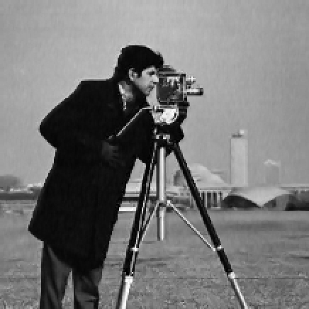
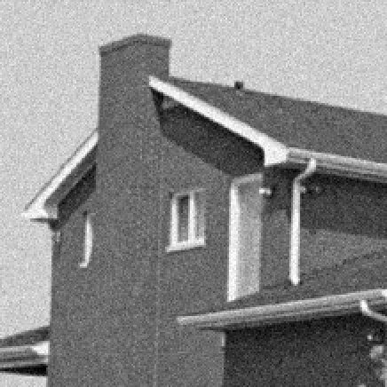
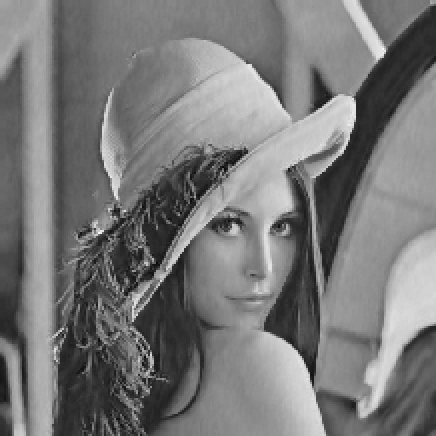
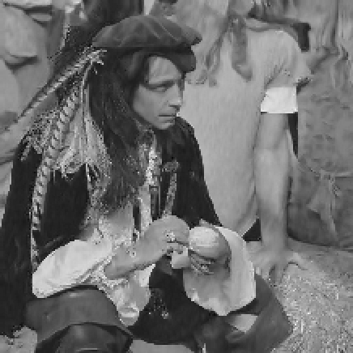
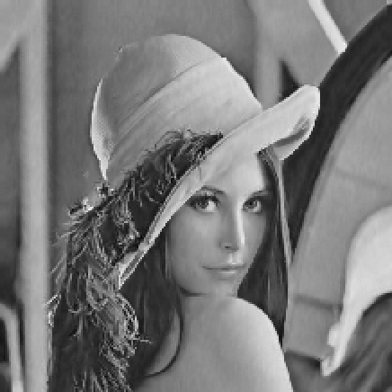
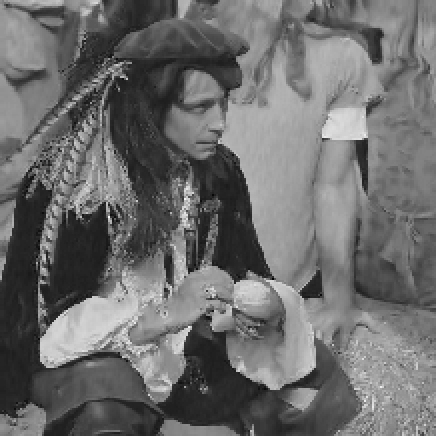

University projects
Denoiser algorithm (February-May 2020)
Goal: Experimenting with various image denoising techniques, more specifically using an edge-preserving method, thanks to the principles of the BM3D algorithm, such as 3D filtering and block-matching (the aim being to propose an algorithm based on these principles rather than implementing the BM3D algorithm as such).
Context: First year of master's in Artificial Intelligence, in Erasmus at University of Malta.
Tools:



 



 Français
Français
Made with by Benoît Pannetier © 2022
Finding Space by Takahiro Sakamoto